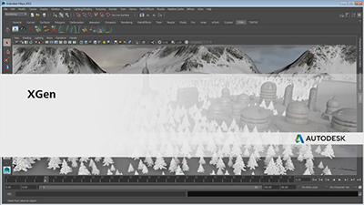

XGen 是一款实例化工具，最常用于通过实例化几何体创建头发或填充场景。主要有两种使用方法，具体取决于要执行的操作。
| 如果要执行以下操作，则使用交互式 XGen 修饰... | 如果要执行以下操作，则使用 XGen 描述... |
|---|---|
|
|
交互式修饰和 XGen 描述几乎是相互独立 - 即，它们不进行交互（从一个系统转化为另一个系统时除外）。因此，最好先确定要通过修饰执行的操作，然后基于此选择合适的方法。随后，您可以遵循以下学习路径创建实例化几何体。
头发学习路径
| 交互式 XGen 修饰 | XGen 描述 | ||
|---|---|---|---|
| 1. 基本概述 |

|
||
| 2. 创建基础基本体 |
 |
||
| 3. 修饰和定形头发 | |||
| 4. 添加修改器 |
 |
||
| 5. *可选*转化 | |||
| 6. 设置动画 | |||
| 7. 渲染 | |||
| 8. 保存并传递 |
 |